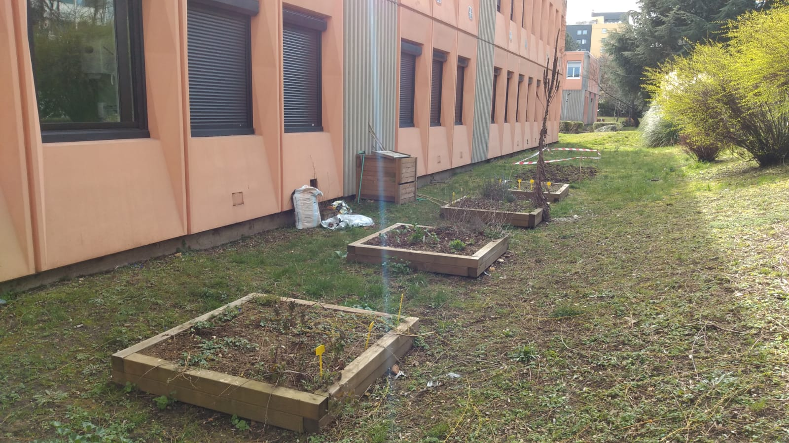
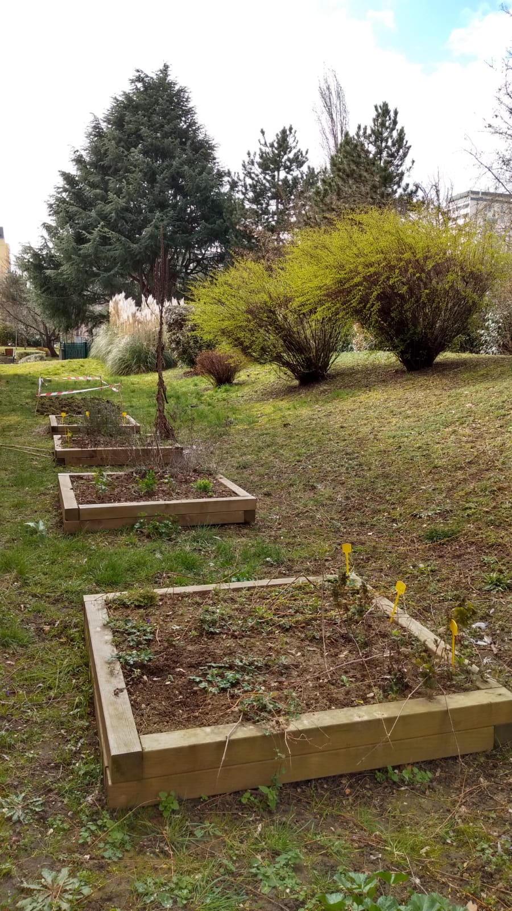
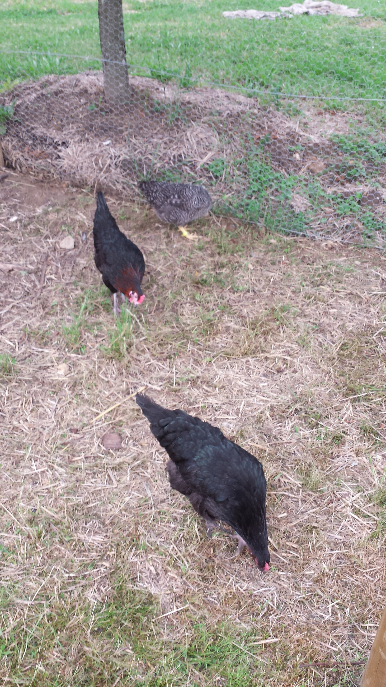
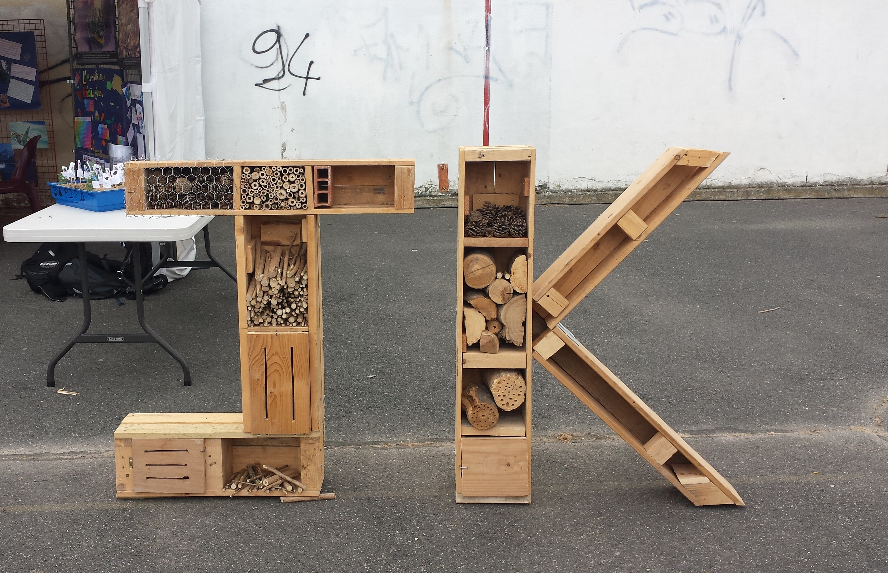
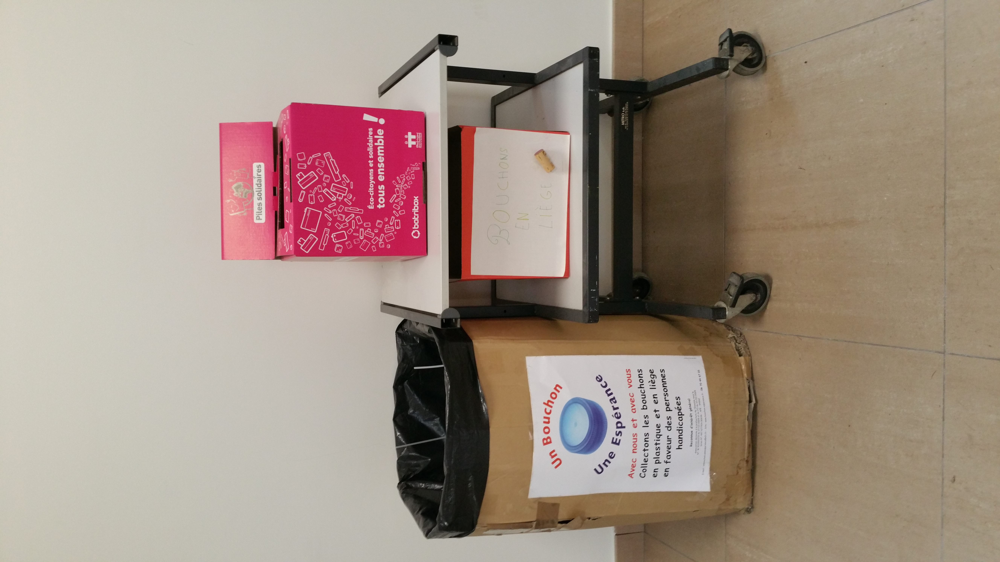
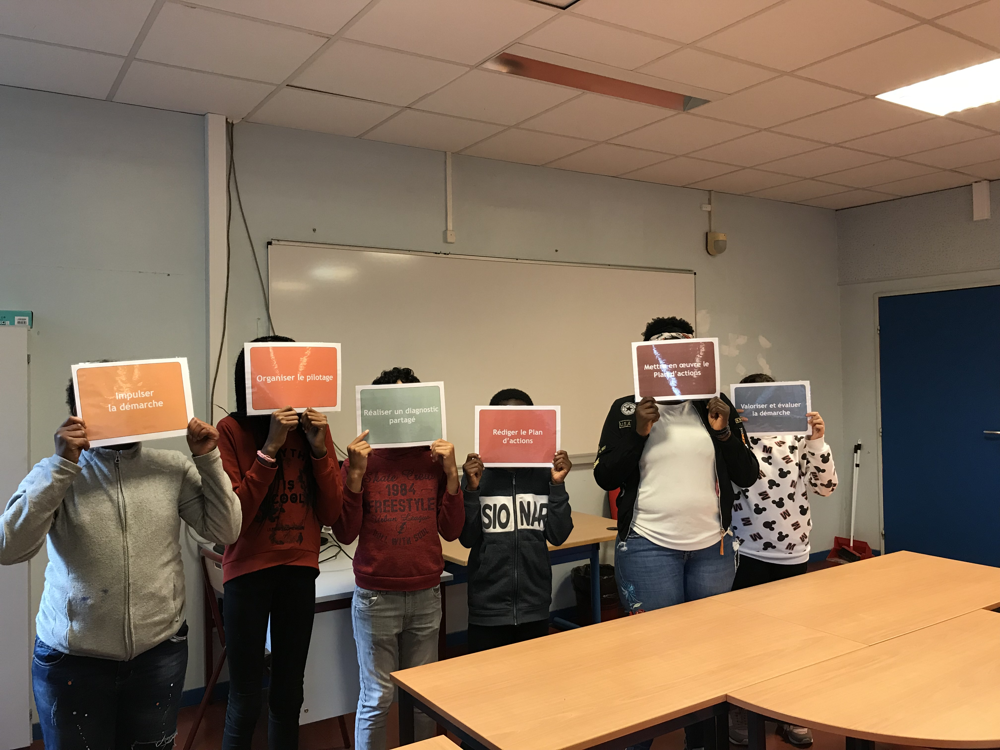

Septembre 2017
Le département du Val-de-Marne a offert au collège plusieurs petits lopins de terre pour faire un potager ainsi que du matériel pour le jardinage,( des graines à planter ainsi qu’ un composteur en bois pour les végétaux). Un atelier « Jardinage » est encadré par un professeur du collège.



Juin 2018
Sortie au forum du développement durable au collège Janusz Korczak de Limeil-Brévannes. Les élèves participant aux ateliers en lien avec le développement durable se sont rendus à pieds au forum pour récolter de nouvelles idées pour le collège. Ils ont pu découvrir le poulailler et la serre du collège et ont rencontré un apiculteur du Val-de-Marne. Ils ont également joué à des jeux en ligne en lien avec l’écologie. Ils sont repartis chacun avec un plant de légume donné par le collège.

Septembre 2018
À l’entrée du collège, il est possible de déposer ses bouchons et piles usagées dans des cartons appropriés. Les bouchons sont envoyés à l’association « Un bouchon, une espérance » qui les vend à une société et les bénéfices sont versés à des personnes en situation de handicap. Quant aux piles, elles sont envoyées à la société Batribox qui travaille en partenariat avec l’association « Électriciens sans frontières ». Cette association se déplace dans le monde et va mettre l’électricité dans des lieux publics qui en sont encore dépourvus.

Novembre 2018
L’association Ecophylle, spécialiste des démarches globales au développement durable, est venue former les élèves volontaires du collège à être éco-délégué. Les formatrices ont appris aux élèves mais également aux adultes du collège comment mettre en place un projet dans un établissement. Elles ont aidé le collège à créer un comité de pilotage qui réunit différents acteurs : les élèves éco-délégués, les professeurs volontaires, la direction de l’établissement, un représentant de la Mairie de Boissy-Saint-Léger et du département du Val-de-Marne. A la suite d’un comité de pilotage, des projets sont à programmer à et à réaliser durant l’année scolaire en cours ou pour la suivante.

Février 2019
Les élèves participants à l’atelier « Développement durable » se sont rendus à pieds au centre de tri des déchets Suez de Limeil-Brévannes. Ils ont pu visiter le centre avec un guide et comprendre son fonctionnement. Plus tard, les élèves ont réalisé une vidéo pour expliquer aux collégiens l’importance de faire correctement le tri en amont et quelle est la vie d’un déchet à partir de la poubelle où on l’a jeté.

Septembre 2019
Dans chaque salle de classe du collège, les élèves doivent trier leurs déchets afin qu’ils soient recyclés comme le papier. Ils peuvent également jeter leurs stylos, feutres, surligneurs, correcteurs dans une boîte appropriée. La société Terracycle les récupère et les vend à une société dont les bénéfices sont versés à une association qu’on a choisie au préalable.

Octobre 2019
Première élection des éco-délégués au collège. Un éco-délégué a été élu par classe afin que cet élève soit le porte parole des idées de ses camarades en lien avec le développement durable mais également qu’il présente les différents projets mis en place au collège.
De plus, le collège a obtenu le niveau 1 du label E3D (Établissement en démarche de développement durable).
Décembre 2019
Grâce au comité de pilotage de l’année scolaire 2018/2019, une dégustation à l’aveugle de fruits et légumes de saisons s’est déroulée pour toutes les classes de 5ème. Cette dégustation a été encadrée par une diététicienne du département du Val-de-Marne et de la chef de la restauration du collège. La diététicienne en a profité pour rappeler l’importance de consommer des fruits et légumes pour leurs bienfaits sur notre santé mais également de les acheter de saison pour éviter qu’ils ne viennent de trop loin (hors de France). À la fin de la séance, des fiches recettes étaient proposés aux élèves qui le souhaitaient.
Septembre 2020
Plusieurs élèves volontaires ont ramassé pendant une heure les déchets jetés par terre le long de la piste cyclable reliant le collège à la gare du RER A lors de la semaine européenne du développement durable. Ils les ont triés au fur et à mesure et ils ont fait des découvertes étonnantes ! Plusieurs passants les ont félicités pour leur acte citoyen !